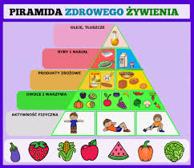

Zdrowe odżywianie
Zdrowe odżywianie to jadłospis odpowiednio zbilansowany zarówno pod względem kalorycznym, jak i odżywczym.
Odpowiednio zbilansowana dieta odgrywa ważną rolę w profilaktyce wielu chorób cywilizacyjnych – między
innymi cukrzycy i otyłości.

Regularna aktywność fizyczna
Zdrowy tryb życia to także regularna aktywność fizyczna. Budowanie nowych nawyków w tym obszarze może być
równie trudne jak wprowadzenie zmian w diecie. Aby osiągnąć sukces, warto pamiętać, że nic nie dzieje się
z dnia na dzień. Budowanie nawyków to proces, który wymaga motywacji i cierpliwości.
Jakość snu
Dbanie o zdrowie to również uważne przyjrzenie się temu, jak odpoczywamy. Zdrowy tryb życia zakłada nie tylko
aktywność fizyczną, ale również czas regeneracji. Tymczasem w dzisiejszym zabieganym świecie często nie mamy
czasu na sen, a gdy już śpimy – nie zwracamy uwagi na jego higienę.

Porady
- Prowadź aktywny tryb życia, który obejmują zarówno aerobik, jak i trening siłowy.
- Staraj się zapewnić sobie wystarczającą ilość snu każdej nocy, która w przypadku osób dorosłych wynosi zazwyczaj od 7 do 9 godzin.
- Spożywaj różnorodne, świeże i odżywcze produkty, takie jak warzywa, owoce, pełnoziarniste produkty zbożowe, zdrowe źródła białka i zdrowe tłuszcze.
- Planuj regularne wizyty u lekarza i regularnie wykonuj profilaktycznie badania w celu monitorowania stanu zdrowia i zapobiegania chorobom.
- Pamiętaj, aby pić wystarczającą ilość wody każdego dnia, aby utrzymać odpowiednie nawodnienie organizmu i wspomóc przemianę materii.
Plan Treningowy
| Dzień |
Trening |
Zapotrzebowanie kaloryczne |
| Poniedziałek |
Kardio |
2000 kcal |
| Wtorek |
Trening Siłowy |
2200 kcal |
| Środa |
Joga |
1800 kcal |
| Czwartek |
Trening interwałowy |
2300 kcal |
| Piątek |
Pływanie |
2500 kcal |
Zapisz się do newslettera